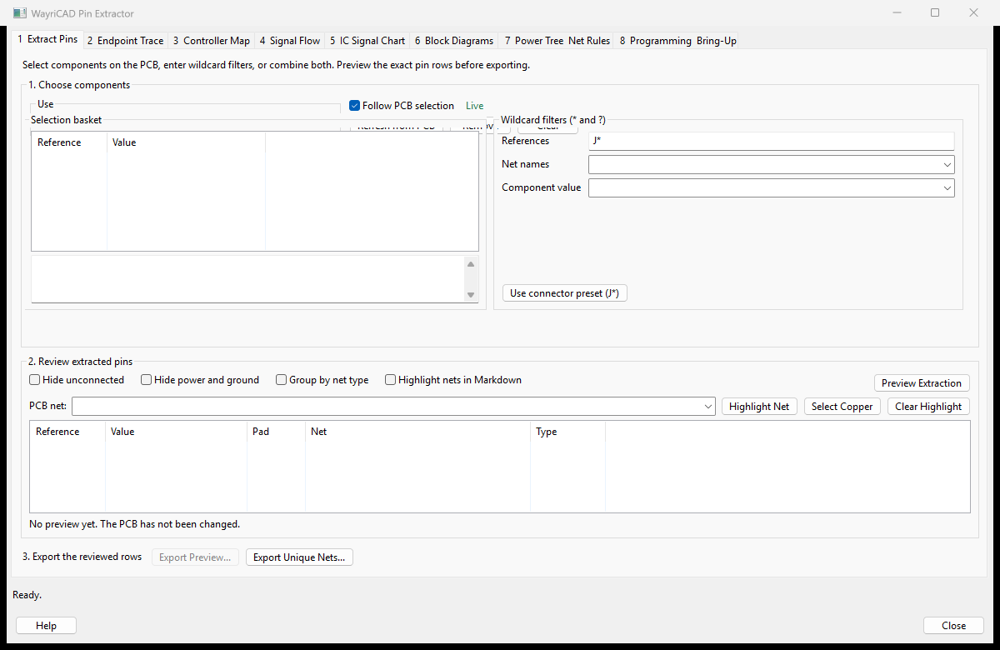
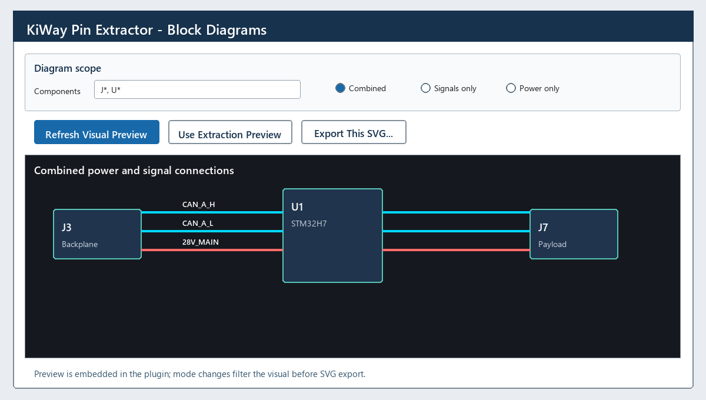
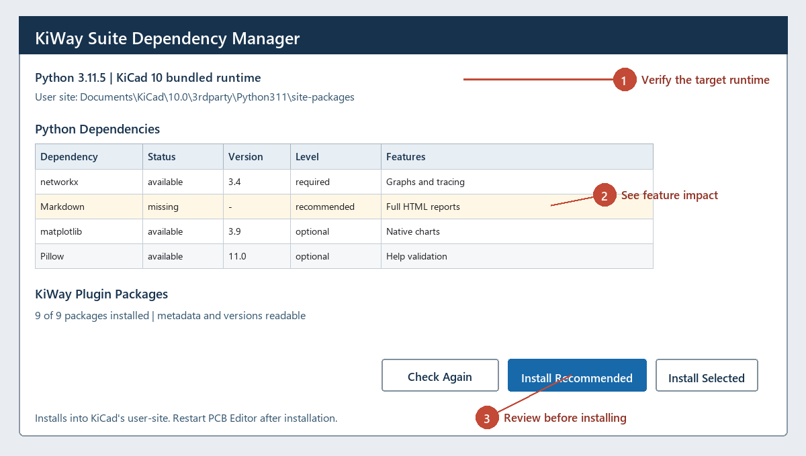
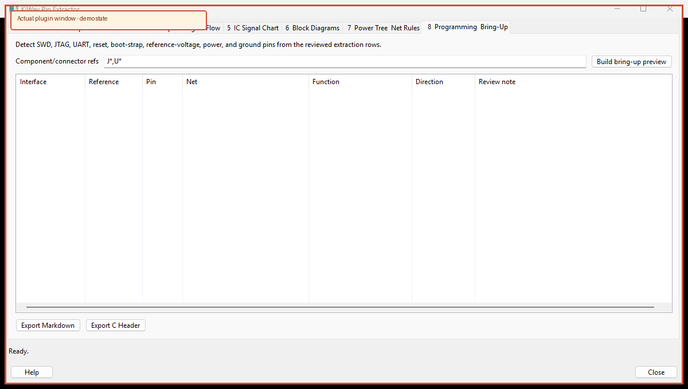

The extractor is a modeless PCB Editor window. Keep it open while selecting components, reviewing pin rows, and locating nets on the board.
Earlier extraction and analysis workspace. The new Connector tools page is covered in its separate guide below.

J*, U1, P?, net patterns such as CAN_*, 28V*, and a value pattern.J*, and immediately refreshes the preview.Open Connector tools. Mating pair reviews two connector contact layouts with explicit board sides, rotations, reflections and relative XY offsets. Check pin 1 and the A-pin/B-pin table, edit labels and naming modifiers, then copy the reviewed label sets. Unmatched and ambiguous contacts are reported. Geometry alone does not establish manufacturer compatibility or 3D fit.
Paste labels accepts one label column or explicit pin/label CSV or TSV. Select a numbering sequence, header policy and global/local/hierarchical scope. Edit individual rows and copy all or selected labels. The pin column is an assignment aid; place the pasted anchors on the intended symbol pins or wires. Matching global names intentionally connect within a project.
Physical pinout preserves numbered pad rows/columns and empty positions, rather than forcing numeric pin order. Top/bottom view, rotation, reflection, tolerance and transpose control the exported table.
Open the full connector and label guide for all controls, coordinate conventions, examples and the labels, connector-grid and connector-mate CLI commands. These tools do not modify the source PCB or schematic.
Open 2 Endpoint Trace to resolve a family of labels to selected component pins. Enter a net wildcard such as *TM, *_TD, or DEMO_CTRL_*. Under Resolve endpoint refs, enter exact references or wildcards such as U1,U2, J1,U1, or U*.
Trace through refs controls which parts may join differently named nets. The defaults cover common series resistors, inductors, ferrites, fuses, capacitors, and jumpers; parts with a NetTie_Path field are also traversable. Remove a broad pattern when that component type must be treated as a terminal instead.
The result identifies the matched label, endpoint reference and pin, pin function when KiCad exposes it, terminal net, ordered intermediate components, and full trace. Double-click a row to highlight the original labeled net. Export the reviewed software/harness map to CSV or Markdown. PCB nets do not inherently encode signal direction, so the table reports resolved endpoints rather than claiming an unverified source.
Open 3 Controller Map to build a software-facing table from selected controller/IC pins to connector pins, including renamed nets and every inline component. Enter exact references or wildcards, or select footprints in PCB Editor and click Use PCB Selection.
A component is crossed only when an exact pin pair is approved. Rule format is reference pattern | pin A-pin B | passive/active | review note. Pin tokens match physical pad numbers or schematic pin functions.
R* | 1-2 | passive | two-terminal series resistor Q12 | D-S | active | MOSFET state must be verified Q20 | C-E | active | BJT bias must be verified U7 | IN-OUT | active | explicitly reviewed pass-through IC
The safe defaults include series resistors, inductors, ferrites, and fuses. Capacitors are deliberately excluded because they are normally shunts. MOSFET, BJT, jumper-state, and other IC rules are ignored until Enable conditional active paths is checked. Active paths remain Conditional; alternate permitted paths are Ambiguous. The mapper does not infer transistor state, population state, or electrical direction.
Review source and connector pin functions, net sequence, inline components, pin transitions, status, confidence, and ordered path. Maximum hops and route count prevent runaway traversal. Double-click a row to highlight its source net, then export the exact preview to CSV or Markdown.
D-S cannot match pad functions in the PCB/netlist, the component is not crossed. Use reviewed numeric pairs when the board does not expose functions.Open 7 Power Tree & Net Rules to edit comma-, semicolon-, or newline-separated wildcard lists for power, supply, ground, and forced-signal nets. A forced-signal rule overrides broad voltage rules. Click Apply Rules; the same classification then drives extraction, signal flow, IC charts, block diagrams, and power-tree analysis.
In 1 Extract Pins, choose any PCB net and use Highlight Net, Select Copper, or Clear Highlight. Double-clicking pin, signal-flow, IC-chart, or classified-net rows uses the same native net-code lookup.
Enter source and destination reference wildcards. Consolidate repeated routes groups the pad-level Cartesian expansion into a single source/net/destination route with source pins, destination pins, intermediate parts, protocol, path, and underlying link count. Disable it when every physical pad pairing is required.
Select an IC and click Preview. WayriCAD generates the detailed destination table and a visual IC-to-peripheral flow chart from the same rows. Enable Include Power Nets when rail connectivity is required. The SVG export matches the generated chart.
After applying net rules, click Build Power Tree. WayriCAD searches references, values, footprints, descriptions, and custom fields for terms such as LDO, buck, boost, regulator, PMIC, load switch, ferrite, fuse, and power filter. It uses VIN/VOUT/SW-style pin functions when available and marks voltage- or pad-order-based direction as inferred.
The result includes classified rails, converter/filter paths, root inputs, attached loads, and checks for unclassified voltage nets, unresolved sources, incomplete converters, multiple drivers, direction conflicts, and cycles. Export the reviewed tree as SVG or its paths and findings as CSV. This workflow is inspired by the graphical power architecture approach of the open-source PTree project; WayriCAD derives topology from the PCB instead of requiring a manually entered consumption model.

Multi-project inputs, sheet aliases, TM/TC extraction, cross-link rules, harness generation, and full ICD reports are separated into Tools > External Plugins > WayriCAD Interboard & Harness. This keeps ordinary pin extraction small while retaining the complete system workflow.
DEMO_CTRL,DEMO_SENSOR,DEMO_POWER,DEMO_IO.Display Name | /hierarchical/path/* | reference wildcard.| Cross-link rule | Example | Behavior |
|---|---|---|
| Wildcard | Board prefixes | wildcard | DEMO_CTRL_* | DEMO_SENSOR_* | Captured signal suffixes must agree. |
| Regex | Harness || regex || ^SRC_(?P<signal>.+)$ || ^DST_(?P<signal>.+)$ | Named capture groups must agree. |
| Power | --include-power | Opt-in because common rails otherwise create many-to-many matches. |
Open Dependencies... from Interboard & Harness to inspect the active KiCad Python runtime, pip, all suite packages, and required, recommended, or optional Python dependencies.

wayricad dependencies, compile checks, or the integrated manager.The CLI runs outside KiCad and supports deterministic output, config files, batch directories, and machine-readable diagnostics.
wayricad --help wayricad dependencies wayricad dependencies --install --dry-run wayricad inspect design.xml --format json wayricad extract design.xml --output pins.csv --format csv wayricad extract ./projects --batch --sheet-aliases aliases.txt --format json wayricad crosslink board-a.csv board-b.md --rules rules.txt --format json wayricad validate design.xml --diagnostics json wayricad report design.xml --format html --output report.html wayricad report design.xml --format svg --output architecture.svg wayricad benchmark --nets 2000 --iterations 5 wayricad test
| Command | Purpose | Typical output |
|---|---|---|
dependencies | Check or install reviewed suite dependencies. | JSON health report |
inspect | Parse projects/netlists and summarize hierarchy. | JSON, Markdown |
extract | Extract pins, connectors, test points, TM/TC rows, and safeguarded controller maps. | JSON, CSV, Markdown |
crosslink | Link boards using exact, normalized, wildcard, or regex rules. | JSON, CSV, Markdown, SVG |
validate | Check ambiguity, missing endpoints, power policy, and malformed inputs. | Machine-readable diagnostics |
report | Generate review and publication artifacts. | Markdown, HTML, CSV, JSON, SVG |
benchmark | Run deterministic synthetic scaling checks. | JSON measurements |
test | Run the installed automated suite. | Test runner output |
Use --config config.json for defaults; command-line flags override config values. Exit codes are 0 success, 1 runtime failure, 2 usage/input error, and 3 validation findings.

Open tab 8 Programming & Bring-Up, scope the connector/controller references, and build the preview. WayriCAD classifies SWD, JTAG, UART, reset, boot-strap, target-reference voltage, power, and ground names. Review voltage compatibility, connector orientation, reset/boot state, and target pin functions before exporting Markdown or C definitions.
| Symptom | Resolution |
|---|---|
| PCB selection does not appear | Enable Follow PCB selection, click a footprint rather than a track, or click Refresh from PCB. |
| No preview rows | Check the selected source mode and clear restrictive net/value filters. |
| No endpoint traces | Verify the label wildcard, endpoint references, and Trace through refs. A renamed net across an unlisted series part intentionally stops there. |
| No controller-map path through Q/U | Add the exact physical or function pin pair, then enable conditional active paths. A reference wildcard alone intentionally cannot cross an active device. |
| Controller-map route is conditional or ambiguous | Verify device state, stuffing option, pin functions, and alternate routes against the schematic. Narrow the rule to an exact reference/pair before publication. |
| Help does not open | The Help button now opens packaged documentation inside a native WayriCAD window. Use Open in Browser only as a fallback. |
| A rail appears as signal | Add its exact name or a wildcard under Power or Supply patterns, then click Apply Rules. Use Force-signal only for intentional exceptions. |
| Double-click does not highlight | Choose the same name in PCB net and click Highlight Net. Select Copper can be used to verify that routed tracks, vias, or zones carry that net. |
| Power-tree direction is inferred | Add VIN/VOUT/SW pin functions in the library or verify the voltage heuristic before using the diagram for review. |
| Diagram is empty | Use connected component references and choose System map before narrowing by connection type. |
| Only Root sheet appears | Use a KiCad XML netlist; PCB data alone does not contain schematic hierarchy. |
| Too many cross-links | Exclude power and narrow wildcard/regex rules. Ambiguous matches are retained for review. |
| Missing HTML features | Open Dependencies and install recommended packages into KiCad's user-site. |
A pin export describes the saved schematic/PCB source selected for extraction. A controller-to-connector map adds explicitly supported traversal rules; an active-device transition can be conditional rather than proven connectivity. Diagram placement and line length are presentation, not physical wire or trace length.
After a design change, extract again and check reference/pin identities before reusing a harness or programming report. Missing libraries, unmatched hierarchy instances and ambiguous paths require correction or an explicit unresolved result; do not use a diagram alone as an electrical validation.